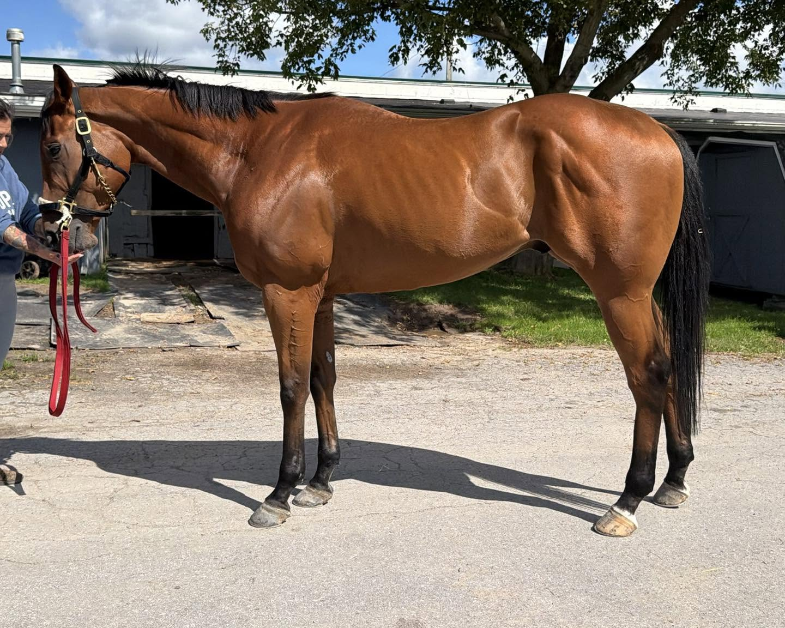
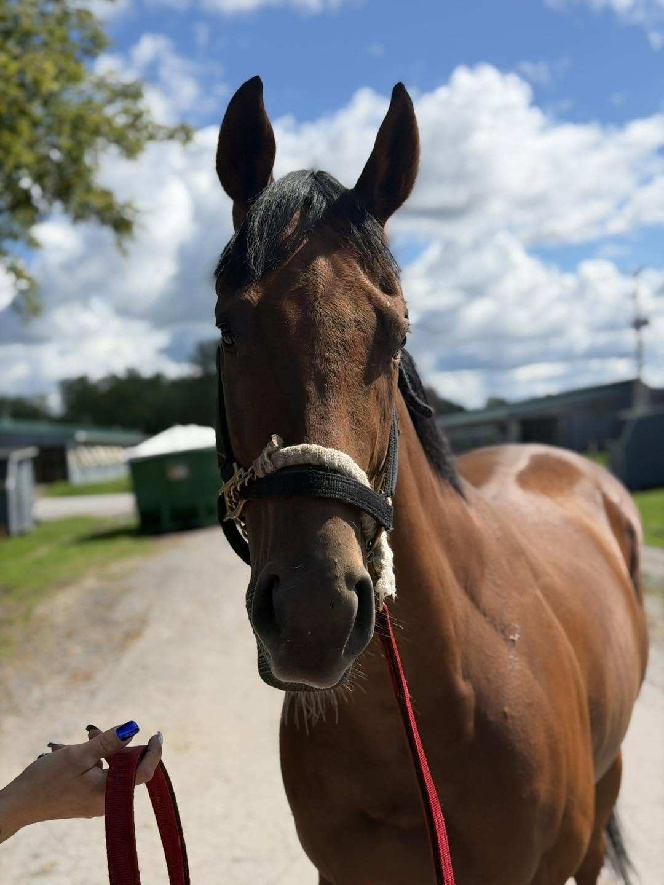
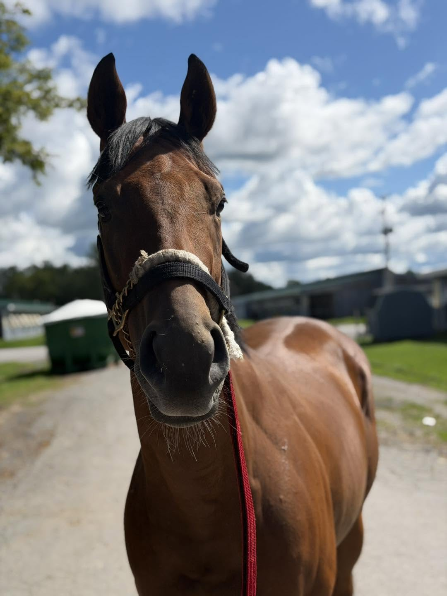
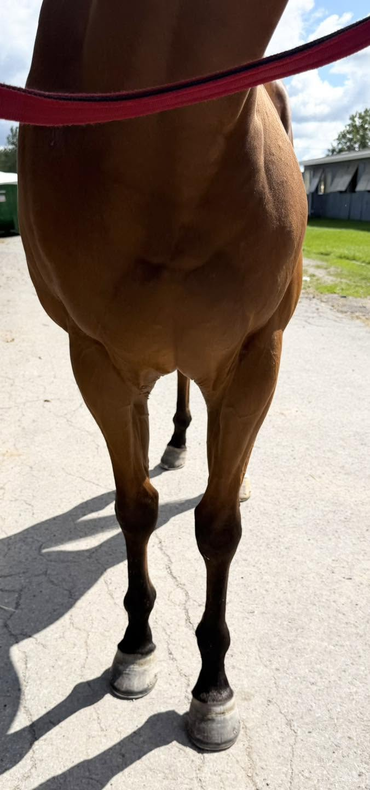
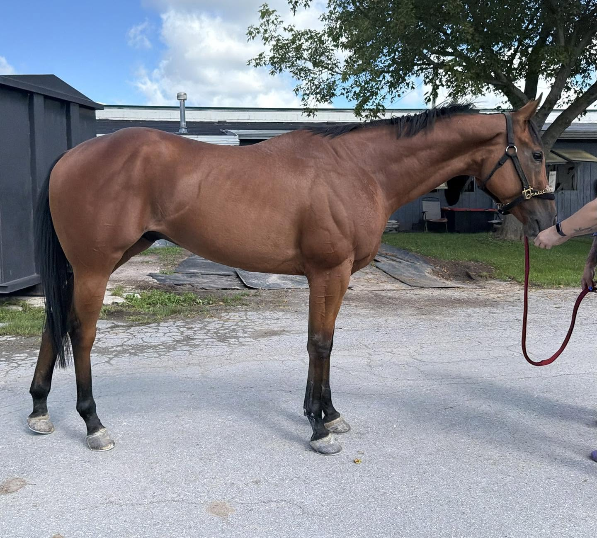
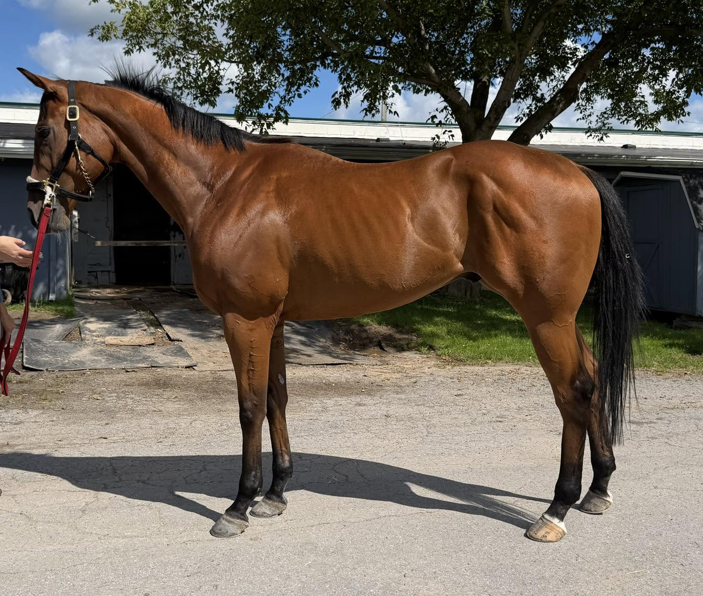

CONNOR’S TURN, 2023, 16.0 h., bay gelding
Located at the Finger Lakes Race Track in Farmington, NY (near Rochester, NY).
This was a great listing to kick off our day, setting the tone as we saw several really nice, young prospects! We loved this sweet, sleepy boy with the pretty forelock. We first caught him tucked up contentedly napping in his stall. As his trainer entered, he quietly got to his feet, stood patiently as he received a quick once over to flick off some shavings from his coat, and politely walked outside like a total gentleman. In the sunlight his solid bay coat took on a golden sheen: we noticed he has just a dusting of chrome on both of his hind coronets /heels. Classic elegance in any show ring!
We were told that he is “great in his stall” and is really “good about everything”. And that’s what exactly what we observed. He was cooperative as the volunteers set up for photos- super sweet, politely-friendly, and he seemed to enjoy the attention. He strikes us as having an ammy-friendly brain and would probably enjoy being someone’s special steady-eddy partner.
He’s super cute with an adorable face and is nicely put together with short-coupled, well-balanced proportions. We liked how he stands up with his hind-end tucked underneath him. Efficiently athletic. He jogged quietly and politely on a loose lead without a chain, displaying cute, springy, and relaxed movement. He remained happy, chill, and agreeable throughout his photos and video.
Lightly raced, with only four (rather lackluster) starts, he’s a pretty much a blank slate that you could take in many directions. By Galilean (Uncle Mo / Indian Charlie) out of a Yes Its True mare, with Sadler Wells/ El Prado and Gone West also appearing in his pedigree, he has a nice breeding to be your next sport horse prospect! He’s just too slow (and chill) to be a racehorse. Only three, he is likely to grow a tad more and he certainly has some filling out yet to do; this sweet and lovely boy right now will be stunning dude in the future. We’re confident that he will be much loved in his next career. If you are looking for a super chill, easy-going, lightly-raced, young gelding- here he is!
Price: $1,000 (neg.)
Contact: Adrianne D’Alessandro (585) 281-1810







